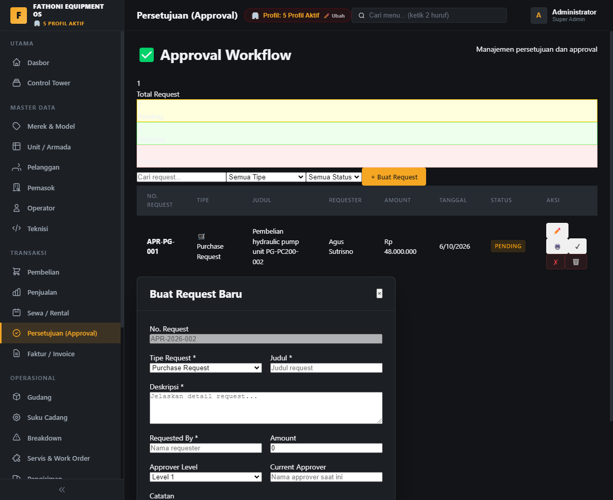
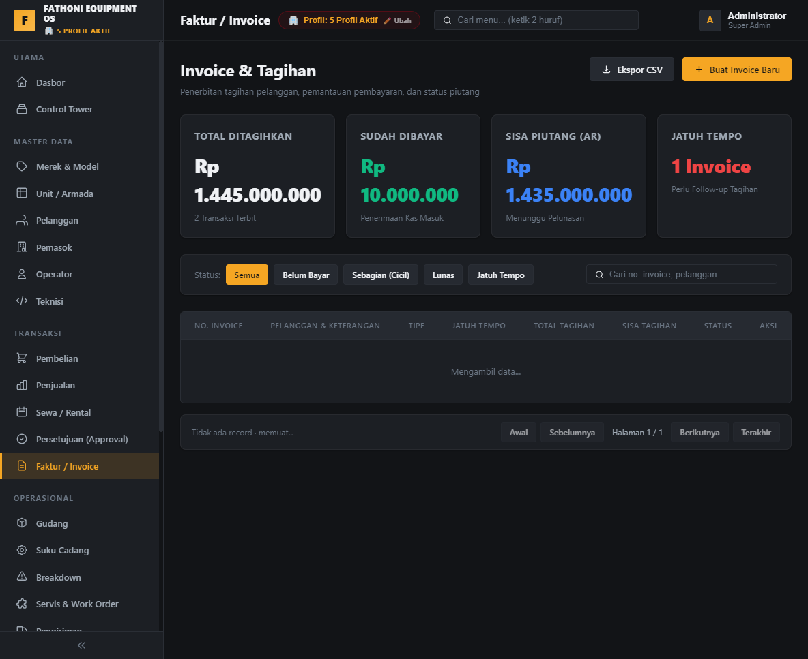
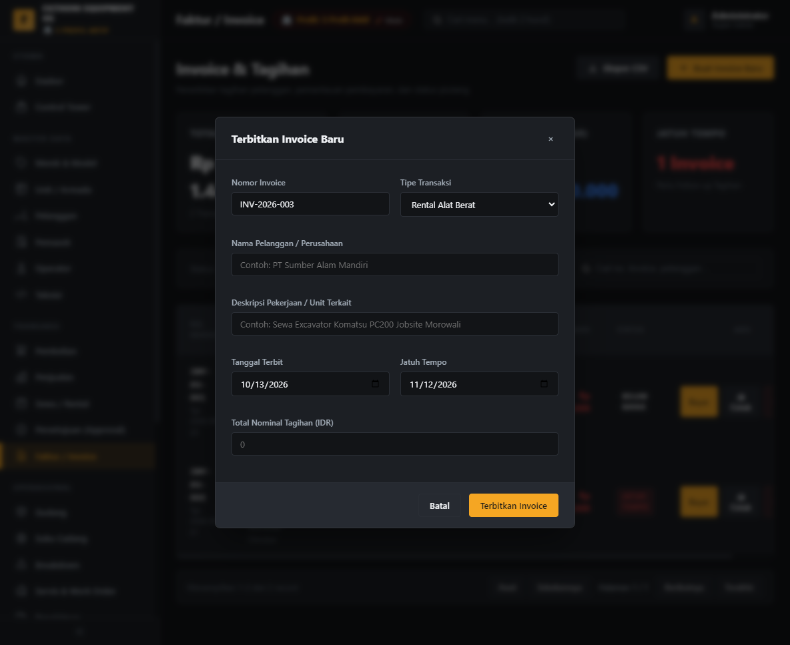

| Kelompok sidebar | Transaksi |
| Alamat | #/invoices (klik menu Faktur / Invoice di sidebar) |
| Peran yang melihat | Super Admin, Sales, Teknisi, Keuangan |
| Mode bisnis | menu ini tampil bila salah satu profil bisnis aktif: Dealer / Distributor, Perusahaan Sewa (Rental), Bengkel / Workshop, Pedagang Alat Bekas |
| Layar dipotret | 1 |
| Form dipotret | Terbitkan Invoice Baru · Catat Penerimaan Pembayaran |
Semua tagihan: terbit otomatis dari Penjualan, Sewa, dan Servis, atau dibuat manual. Kolom pembayaran diisi lewat tombol "Bayar" di baris.

Judul di layar: Invoice & Tagihan
Subjudul: Penerbitan tagihan pelanggan, pemantauan pembayaran, dan status piutang
Kartu ringkasan di bagian atas (angka di gambar dari data contoh):
Kolom tabel (1 baris terlihat pada potret):
| No. | Nama kolom persis di layar |
|---|---|
| 1 | NO. INVOICE |
| 2 | PELANGGAN & KETERANGAN |
| 3 | TIPE |
| 4 | JATUH TEMPO |
| 5 | TOTAL TAGIHAN |
| 6 | SISA TAGIHAN |
| 7 | STATUS |
| 8 | AKSI |
Kolom yang ada di luar form (pencarian/pendaftar):
Urutan kolom, nama label, tanda wajib, dan isi bawaan di bawah ini dibaca dari layar yang dipotret, bukan dari kode sumber. Tanda * adalah kolom yang memang ditahan kosong oleh aplikasi.
Dibuka dengan menekan tombol Buat Invoice Baru.

Lebar jendela 540 px. Seluruh kolom muat tanpa menggulir pada jendela tinggi 980 px; pada jendela yang lebih pendek bagian bawah tetap perlu digulir.
| Label di layar | Jenis kolom | Isi saat jendela baru dibuka | Pilihan dropdown / teks bantu |
|---|---|---|---|
| Nomor Invoice * | teks | INV-2026-003 | - |
| Tipe Transaksi | dropdown (4 pilihan) | RENTAL | Rental Alat Berat; Penjualan Unit; Jasa Service & Perbaikan; Spare Parts & Komponen |
| Nama Pelanggan / Perusahaan * | teks | Contoh: PT Sumber Alam Mandiri | - |
| Deskripsi Pekerjaan / Unit Terkait * | teks | Contoh: Sewa Excavator Komatsu PC200 Jobsite Morowali | - |
| Tanggal Terbit * | tanggal | 2026-10-13 | - |
| Jatuh Tempo * | tanggal | 2026-11-12 | - |
| Total Nominal Tagihan (IDR) * | angka | 0 | - |
Wajib diisi: Nomor Invoice, Nama Pelanggan / Perusahaan, Deskripsi Pekerjaan / Unit Terkait, Tanggal Terbit, Jatuh Tempo, Total Nominal Tagihan (IDR)
Tombol di kaki jendela: Batal · Terbitkan Invoice
Dibuka dengan menekan tombol Bayar.

Lebar jendela 440 px. Seluruh kolom muat tanpa menggulir pada jendela tinggi 980 px; pada jendela yang lebih pendek bagian bawah tetap perlu digulir.
| Label di layar | Jenis kolom | Isi saat jendela baru dibuka | Pilihan dropdown / teks bantu |
|---|---|---|---|
| Jumlah Pembayaran Diterima (IDR) * | angka | 1400000000 | - |
| Diterima di Rekening | dropdown (2 pilihan) | BCA - 1234567890 | BCA - 1234567890; Mandiri - 0987654321 |
Wajib diisi: Jumlah Pembayaran Diterima (IDR)
Tombol di kaki jendela: Batal · Simpan Pembayaran